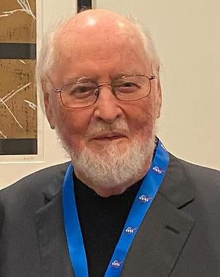

A mediados de la década de 1970, Hollywood consideraba que la gran orquesta sinfónica clásica estaba muerta y debía ser reemplazada por guitarras pop o sintetizadores electrónicos. En 1977, la atronadora fanfarria de apertura de Star Wars grabada por la Orquesta Sinfónica de Londres resucitó de un solo golpe la orquesta de 100 músicos como el medio narrativo supremo del imaginario universal. Heredero directo de la tradición orquestal de Wagner, Chaikovski, Holst y Korngold, Williams aplicó la técnica del Leitmotiv a la mitología contemporánea, creando las melodías más grabadas en el subconsciente de la humanidad: Tiburón, Indiana Jones, E.T., Jurassic Park, La lista de Schindler y Harry Potter.
Con más de 120 bandas sonoras cinematográficas completas y más de 30 obras de concierto de música clásica pura (conciertos para violonchelo, violín, tuba, trompa, fagot, arpa, oboe y flauta), su catálogo está preservado en la Library of Congress de Washington y publicado por Hal Leonard Corporation.
Contexto Vital: Pianista de jazz en Nueva York ('Johnny Williams') y arreglista en Hollywood para Bernard Herrmann y Alfred Newman. Alianza histórica con Steven Spielberg en 'Tiburón' (1975) y con George Lucas en 'Star Wars' (1977).
Contexto Vital: Director titular de la legendaria Boston Pops Orchestra (1980–1993). Compone obras maestras consecutivas: 'El Imperio Contraataca', 'Raiders of the Lost Ark', 'E.T.', 'Jurassic Park' y la desgarradora 'La lista de Schindler'.
Contexto Vital: Crea la música de 'Harry Potter' (Hedwig's Theme) y 'Salvar al soldado Ryan'. En 2020 y 2021 debuta dirigiendo a la Filarmónica de Viena en el Musikverein y a la Filarmónica de Berlín con ovaciones de diez minutos.
Clasificación de sus bandas sonoras legendarias y conciertos para orquesta sinfónica:
| Banda Sonora | Director | Premio / Hito | Año | Aporte & Significado Conceptual |
|---|---|---|---|---|
| Star Wars (Episodios IV a IX) | George Lucas / J.J. Abrams | Ganador del Oscar • Disco de Oro | 1977–2019 | La partitura sinfónica más influyente de la cultura popular; más de 50 leitmotiven individuales que abarcan la Marcha Imperial, el Tema de Leia y el Tema de la Fuerza. |
| La lista de Schindler (Schindler's List) | Steven Spielberg | Ganador del Oscar y Grammy | 1993 | Solo de violín solista grabado por Itzhak Perlman; una elegía judía de dolor, compasión y dignidad humana en medio de la barbarie del Holocausto. |
| Jurassic Park (Parque Jurásico) | Steven Spielberg | Éxito mundial de taquilla y crítica | 1993 | El himno a la majestuosidad de la naturaleza viva; una marcha noble y grandiosa de trompas y cuerdas que recrea el asombro infantil ante los dinosaurios. |
| Harry Potter (La piedra filosofal, etc.) | Chris Columbus / Alfonso Cuarón | Hedwig's Theme (Tema de Hedwig) | 2001 | El solo misterioso y flotante de celesta que definió el universo mágico de Hogwarts para múltiples generaciones de jóvenes de todo el planeta. |
| E.T. El Extraterrestre | Steven Spielberg | Ganador del Oscar | 1982 | La secuencia final de 'Adventures on Earth' fue montada por Spielberg al ritmo de la partitura de Williams, invirtiendo la regla habitual de adaptar la música al corte fílmico. |
| Obra de Concierto | Solista / Dedicatario | Año | Aporte & Significado Conceptual |
|---|---|---|---|
| Concierto para violonchelo y orquesta | Yo-Yo Ma | 1994 | Obra virtuosística de concierto puro con un lirismo desgarrador en cuatro movimientos que explora las texturas más profundas del violonchelo. |
| Concierto para violín n.º 2 | Anne-Sophie Mutter | 2021 | Compuesto expresamente para la gran virtuosa alemana; grabado con la Orquesta Sinfónica de Boston con un virtuosismo contemporáneo deslumbrante. |
| Olympic Fanfare and Theme | Juegos Olímpicos de Los Ángeles 1984 | 1984 | Ganadora del Grammy; la fanfarria marcial de metales que simboliza la gloria deportiva y el ideal de fraternidad de los Juegos Olímpicos modernos. |